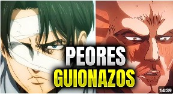
E
Los 3 AGUJEROS DE GUIÓN que ARRUINARON Shingeki No Kyojin (Parte 2)
El Tío Jaeger
503 k vistas · hace 1 año

El Tío Jaeger
503 k vistas · hace 1 año
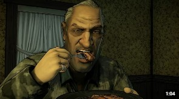
Turned
1.2 M de vistas · hace 3 meses
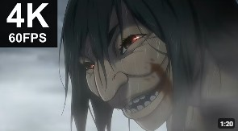
Ryukah TK
4.1 M de vistas · hace 5 años
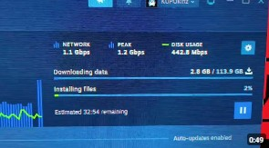
KUPOkinz
4.2 M de vistas · hace 8 meses
Bruno Rondini
4.2 K vistas · hace 2 días
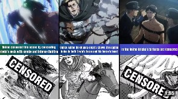
Weeb World
1.1 M de vistas · hace 3 años
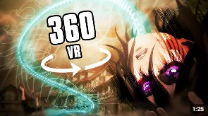
MVR
2.6 M de vistas · hace 4 años
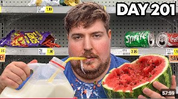
MrBeast
325 M de vistas · hace 1 mes
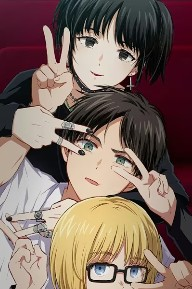
297 k vistas
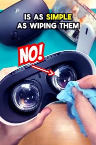
350 k vistas
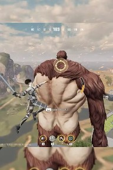
1 M de vistas
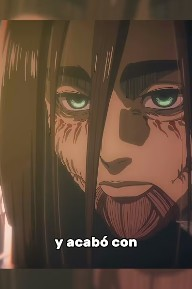
486 k vistas
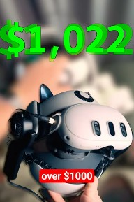
316 k vistas
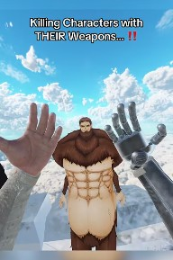
2.5 M de vistas